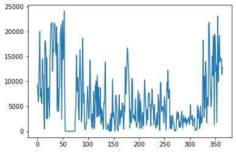

import pandas as pd
import json
import matplotlib.pyplot as pltImport
Data
제주에너지공사 풍력 발전량
dfs = []
for i in range(1, 5):
file_path = f'./data_example/2022년 {i}분기 풍력 발전량.csv'
df = pd.read_csv(file_path)
dfs.append(df)
combined_df = pd.concat(dfs, ignore_index=True)(combined_df==0).sum()일시 0
가시리풍력 0
김녕풍력 1
동복풍력 5
신창풍력 20
행원풍력 10
풍력전체 0
dtype: int64plt.plot(combined_df['신창풍력'])
dfs = []
for i in range(1, 5):
file_path = f'./data_example/2021년 {i}분기 풍력 발전량.csv'
df = pd.read_csv(file_path,encoding='CP949')
dfs.append(df)
combined_df = pd.concat(dfs, ignore_index=True)(combined_df==0).sum()일자 0
가시 0
김녕 1
동복 0
신창 0
행원 0
전체 0
동복북촌풍력발전단지 0
신창풍력발전단지 0
김녕풍력발전기 0
행원풍력발전단지 0
가시국산화풍력발전단지 0
단위: kWh 0
날짜 0
가시리풍력 0
김녕풍력발전기 1
동복북촌풍력 0
신창풍력 0
행원풍력 0
dtype: int64file_path = './data_example/2020년 풍력 발전량(4분기).csv'
pd.read_csv(file_path,encoding='CP949')| 날짜 | 발전량(kWh) | Unnamed: 2 | Unnamed: 3 | |
|---|---|---|---|---|
| 0 | 2020-10-01 | 26,804 | NaN | NaN |
| 1 | 2020-10-02 | 2,531 | NaN | NaN |
| 2 | 2020-10-03 | 2,068 | NaN | NaN |
| 3 | 2020-10-04 | 144,540 | NaN | NaN |
| 4 | 2020-10-05 | 583,602 | NaN | NaN |
| ... | ... | ... | ... | ... |
| 179 | NaN | NaN | NaN | NaN |
| 180 | NaN | NaN | NaN | NaN |
| 181 | NaN | NaN | NaN | NaN |
| 182 | NaN | NaN | NaN | NaN |
| 183 | NaN | NaN | NaN | NaN |
184 rows × 4 columns
한전 태양광 및 풍력 데이터
pd.read_csv('./data_example/지역별 시간대별 태양광 및 풍력 발전량(2309_2311).csv',encoding='CP949')| 거래일자 | 거래시간 | 지역명 | 태양광발전량(Mwh) | 풍력발전량(Mwh) | |
|---|---|---|---|---|---|
| 0 | 2023-09-01 | 1.0 | 경기도 | 0.029757 | 0.000000 |
| 1 | 2023-09-01 | 2.0 | 경기도 | 0.000000 | 0.000000 |
| 2 | 2023-09-01 | 3.0 | 경기도 | 0.000000 | 0.000000 |
| 3 | 2023-09-01 | 4.0 | 경기도 | 0.000000 | 0.000000 |
| 4 | 2023-09-01 | 5.0 | 경기도 | 0.000000 | 0.000000 |
| ... | ... | ... | ... | ... | ... |
| 29787 | 2023-11-13 | 4.0 | 경기도 | 0.000000 | 0.920218 |
| 29788 | 2023-11-13 | 5.0 | 경기도 | 0.000000 | 1.358814 |
| 29789 | 2023-11-13 | 6.0 | 경기도 | 0.000000 | 0.781372 |
| 29790 | 2023-11-13 | 7.0 | 경기도 | 0.000152 | 0.999404 |
| 29791 | 2023 | NaN | NaN | NaN | NaN |
29792 rows × 5 columns
(pd.read_csv('./data_example/지역별 시간대별 태양광 및 풍력 발전량(2309_2311).csv',encoding='CP949')==0).sum()거래일자 0
거래시간 0
지역명 0
태양광발전량(Mwh) 6014
풍력발전량(Mwh) 6319
dtype: int64